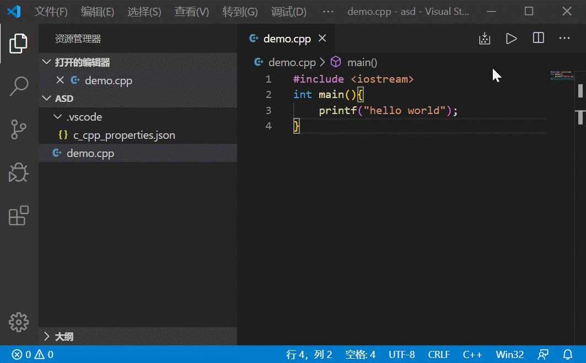
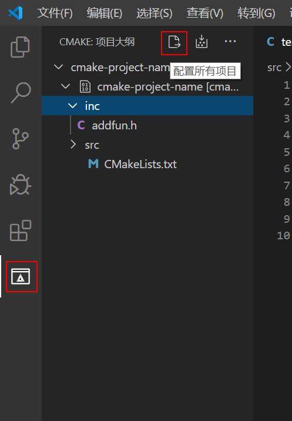

这篇文章写在VSCode在Window下，如何搭建环境写C/C++程序的
VSCode的超高颜值吸引了一大批用户来使用VSCode，相比于VC6.0、Dev-C++等软件的上世纪界面，VSCode简直是降维打击。当然，轻便VSCode的优点，Visual Studio太大，CLion太重，VSCode这股清流便吸引了我们的眼光
这篇文章将如何在VSCode中配置C/C++环境，如果你刚开始学习C/C++（还没学习多文件编译等），平时只是写写算法题，那么你只看前面不涉及CMake的内容就可以了（前面带有CMake的就可以跳过）。否则你就要全看啦！
一、准备
- Visual Studio Code的下载：点击这里：官网下载
- 安装的时候别忘了把open with code勾选上！！
- 如果不是中文的话，可以安装插件Chinese(Simplified) Language
- 安装插件C/C++
- 安装插件C++ Intellisense
- （CMake）安装插件CMake
- （CMake）安装插件CMake Tools
- MinGW-w64的下载：点击这里：sourceforge下载
- 点击Download Latest Version（安装到没有空格、非ASCII码的目录地址下！
默认地址不可以） - 在setting界面中，Architecture选择x86_64
- 安装后将安装目录中的bin文件夹添加到用户变量里
- 在cmd中输入
gcc -v，显示版本信息即安装成功，不显示可以重启试试
- 点击Download Latest Version（安装到没有空格、非ASCII码的目录地址下！
- （CMake）CMake的下载：点击这里：官网下载
- 选择cmake-(这里是版本号)-rc1-win64-x64.msi（Linux与Mac选适合自己系统的）
- 在cmd中输入
cmake --version，显示版本信息即安装成功，不显示可以重启试试
二、C/C++单文件 参考链接
1、创建工程目录
在目录没有空格与非ASCII码的地方新建一个文件夹，并在VSCode中打开这个文件夹
2、配置c_cpp_properties.json文件
在VSCode中按Ctrl+Shift+P，输入Edit configurations(UI)
看一下编译器路径有没有自动填充上，没有的话关闭VSCode再打开，如果还不行，就检查MinGW-w64是否安装成功
更改
- intelliSenseMode模式改为 ${default}
3、配置tasks.json与launch.json文件
在目录下新建demo.cpp文件📃
#include <iostream> int main(){ printf("hello world"); }写完以后按F5—>C++(GDB/LLDB)—>g++.exe……—>(出错了)取消

如果想使用那种黑框框cmd，而不是使用VSCode集成的命令行，可以将launch.json中的externalConsole选项改为true
现在就可以用了！可以在行号打断点，按F5 debug，不打断点就是直接执行（第四部分会说一下会遇到的问题，不要跳过）
三、（CMake）多文件
在VSCode中按Ctrl+Shift+P，输入CMake:Scan for Kits
在VSCode中按Ctrl+Shift+P，输入CMake:Config
在右下角点击快速启动新的CMake项目
输入新的项目名称
选择 Executable 创建可执行文件，等一会
在出现的一个main.cpp文件中执行上面动图的那些操作
下面进行修改与删除
- 删除tasks.json文件
- 删除launch.json中的
"preLaunchTask": "g++.exe build active file"这一行 - 修改
"program": "${fileDirname}\\${fileBasenameNoExtension}.exe",为"program": "${command:cmake.launchTargetPath}",
在建立与build平级的文件夹📁inc与📂src
将CMakeLists.txt的内容修改为
# 最低CMake版本要求 cmake_minimum_required(VERSION 3.10.0) # 项目名称 project(cmake-project-name) # 设置C/C++标准 set(CMAKE_C_STANDARD 11) set(CMAKE_CXX_STANDARD 17) set(CMAKE_CXX_STANDARD_REQUIRED ON) # 头文件路径 include_directories("inc") # 枚举头文件 file(GLOB_RECURSE INCLUDES "inc/*.h" "inc/*.hpp") # 枚举源文件 aux_source_directory("src" SOURCES) # 输出路径 set(EXECUTABLE_OUTPUT_PATH ${PROJECT_BINARY_DIR}) # 生成可执行的文件 add_executable(${PROJECT_NAME} ${SOURCES} ${INCLUDES})以后将头文件写在inc文件夹中，将.cpp/.c/.c文件写在src文件中，每次新添加了文件都要重新生成

Debug等与上面的相同
四、疑难杂症
- 使用cmd输出中文乱码问题
- 问题原因：
VSCode是UTF8编码，而cmd与powershell是GBK编码 - 解决方法①：打开控制面板—>时钟与区域—>更改日期、时间……—>管理（选项卡）—>更改系统区域设置—>Beta版：使用…… 最后重启即可
- 解决方法②：在tasks.json的args中添加
"-fexec-charset=GB18030",更改exe文件的编码
- 问题原因：
本博客所有文章除特别声明外，均采用 CC BY-SA 3.0协议 。转载请注明出处！